FAMOUS MOJI / LOCAL ART REVIEW / SEPTEMBER 16, 2026
Judge the game against its runner.
The old screenshots are retained as evidence of the rejected composition. New screenshot baselines detect changes; they do not establish art quality or user approval. This page is a direct comparison for that separate judgment.
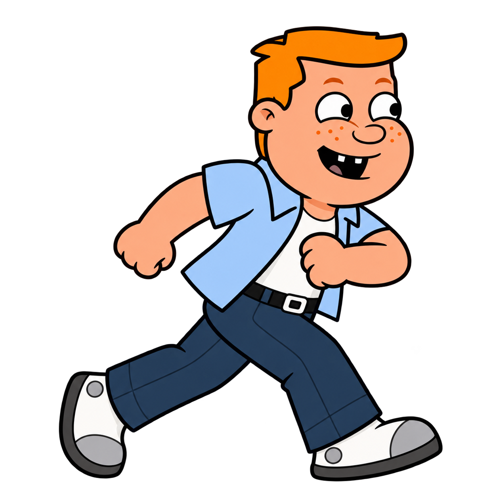
Retained runner reference
Confident dark outlines, simple silhouettes, broad colors, restrained shading. The character sheet and suit chaser are unchanged.
Phone — during play
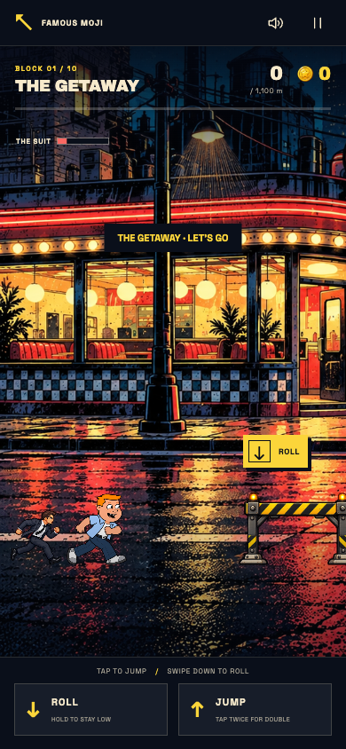
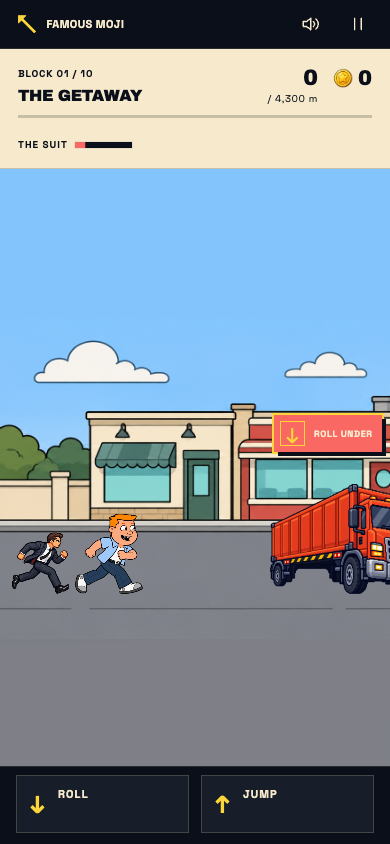
Phone — ready to start
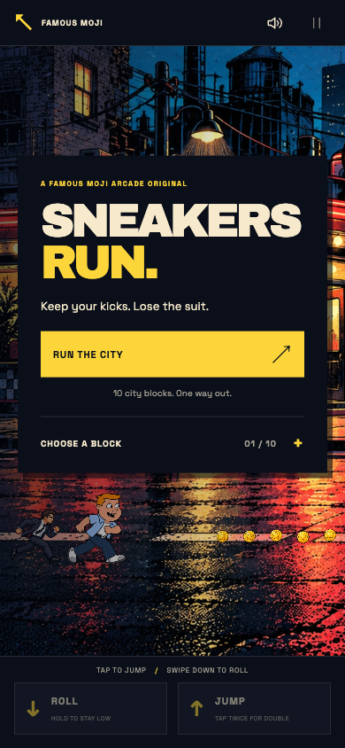
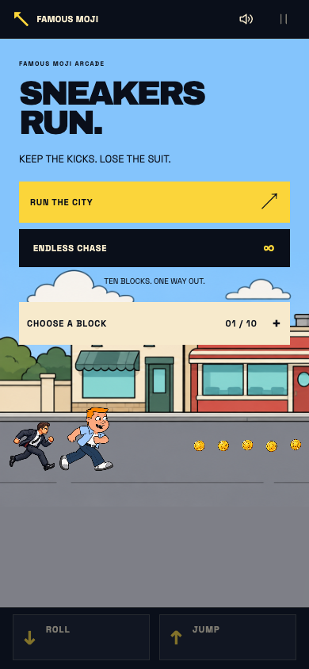
Desktop — ready to start
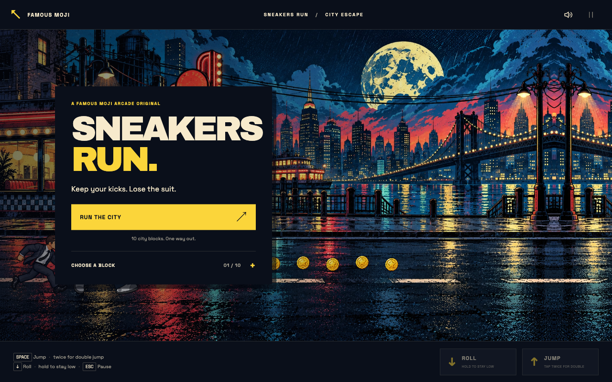
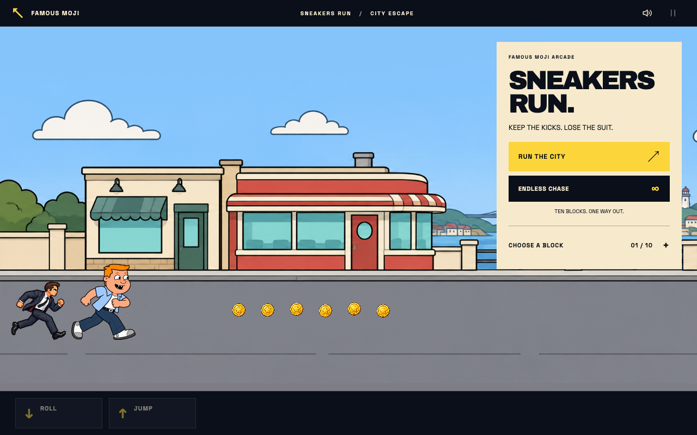
Ten streets, one drawing language
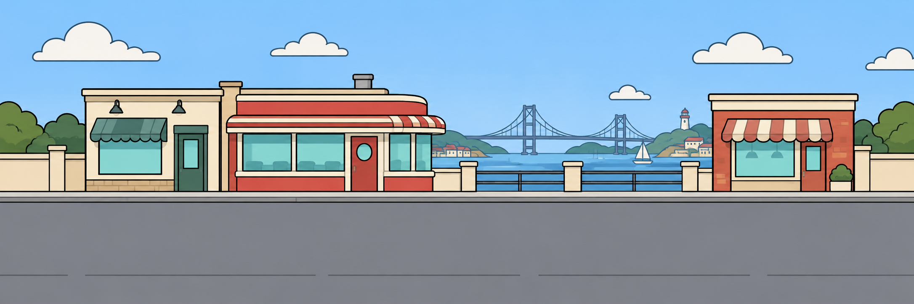
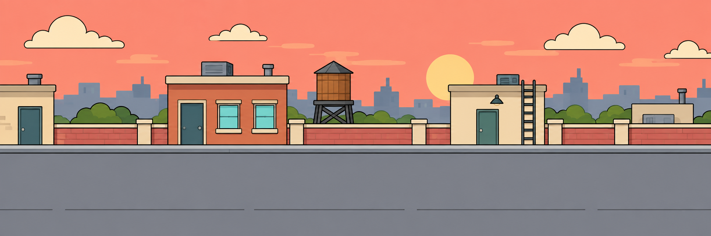
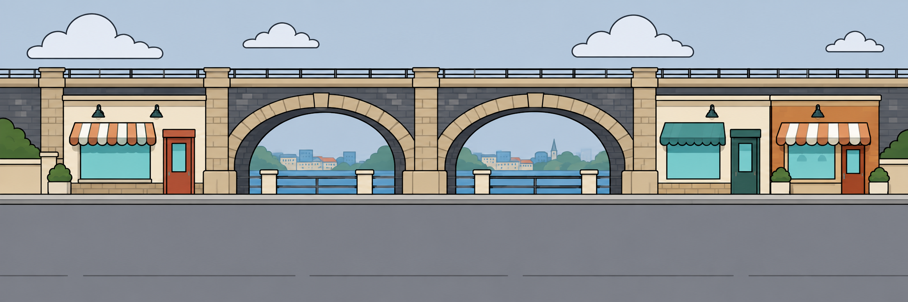
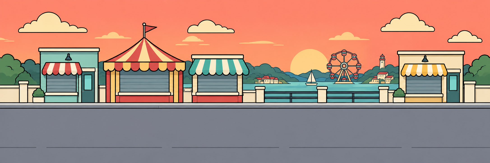
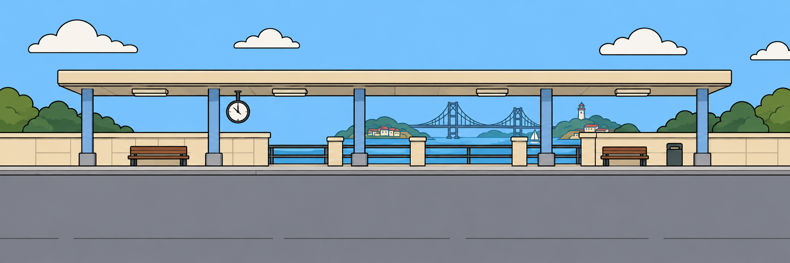
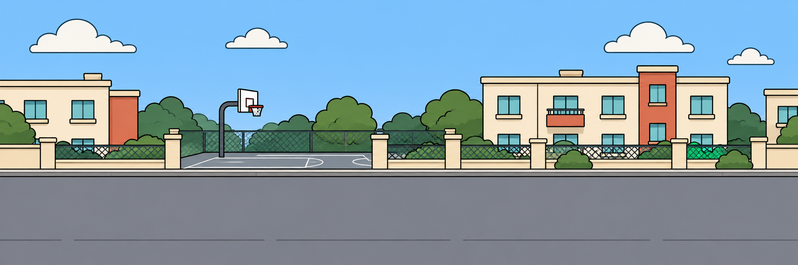
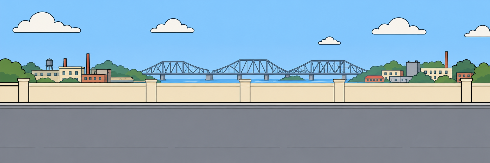
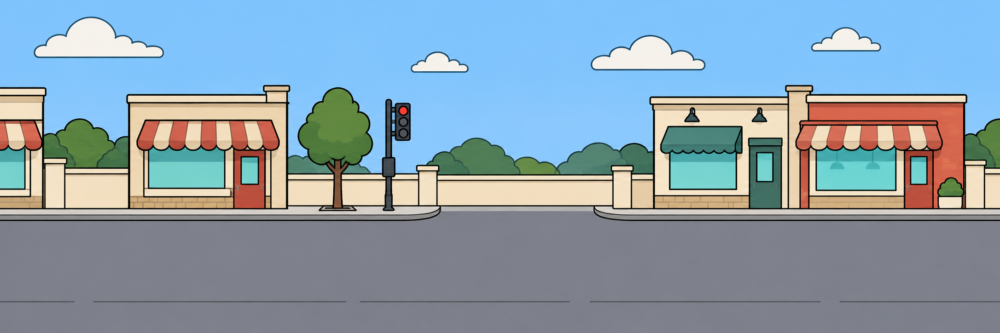
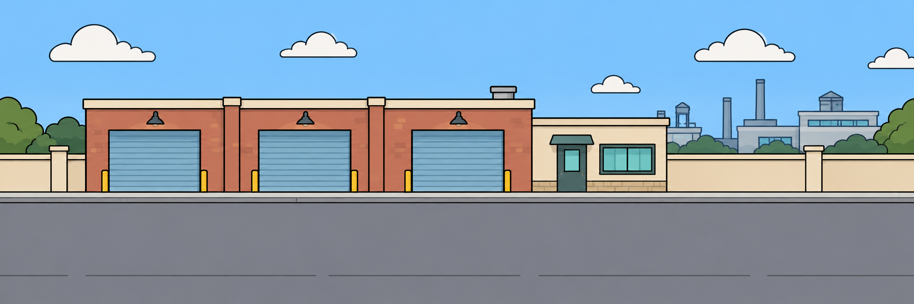
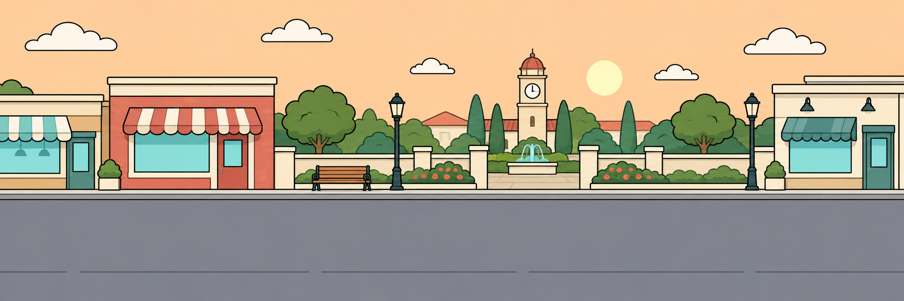
Generated with the built-in ChatGPT Image Gen tool. Full generation prompts. Review criteria, evidence and limits.